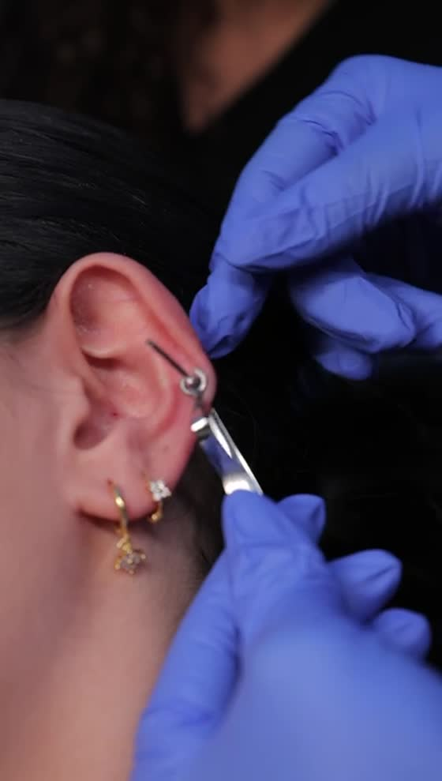

Vous pratiquez sur modèle
Pas juste des démonstrations : vous faites le geste vous-même, encadrée, jusqu'à ce qu'il soit propre.

Académie de perçage · Montréal
Formation pratique sur modèle, deux certifications, un kit complet et un accompagnement pour vos débuts. En petit groupe, avec du vrai matériel.
Sans engagement — on répond d'abord à vos questions.
Ce qui change chez nous
La formation est donnée par Nour Jeha, fondatrice de Doux Perçage. La théorie, tout le monde la donne : ce qui manque après, c'est la pratique, le papier officiel et quelqu'un à qui poser ses questions la première semaine.
Pas juste des démonstrations : vous faites le geste vous-même, encadrée, jusqu'à ce qu'il soit propre.
Le perçage technique : anatomie, choix des bijoux, angles, soins. Et la gestion des agents pathogènes : stérilisation, contrôle des infections, transmission par le sang.
Vos premiers clients, votre site, votre marketing. Et au besoin, un rendez-vous avec un consultant qui bâtit votre plan d’affaires.
Les formations
Vous hésitez entre les deux? C'est exactement le genre de question qu'on démêle en dix minutes au téléphone.
Parcours 01
Le lobe, le cartilage et les montages les plus demandés en salon. Le parcours le plus rapide pour ajouter un service rentable.
Tarif détaillé à l'appel Kit complet inclus — de quoi servir vos dix premiers clients.
Ce parcours m'intéresseParcours 02
Nombril, arcade, nez, langue et compagnie. Le parcours complet pour travailler comme perceuse à temps plein.
Tarif détaillé à l'appel Kit complet inclus — de quoi servir vos dix premiers clients.
Ce parcours m'intéresseComment ça se passe
Quatre étapes, aucune surprise. Vous savez à quoi vous attendre avant même de réserver.
Dix minutes pour cerner votre objectif, votre niveau et le bon parcours. Aucune pression.
Théorie le matin, pratique sur modèle en après-midi, avec le matériel professionnel.
Vos deux certificats nominatifs, perçage technique et agents pathogènes, remis en main propre.
On reste disponibles pour vos questions pendant que vous lancez votre service.
Vous ne cherchez pas une formation?
Oreilles ou corporel, dans un environnement stérile et sans jugement. On prend le temps de placer le bijou au bon endroit — et de vous expliquer comment en prendre soin après.

Questions fréquentes
Non. La formation part de zéro : anatomie, hygiène, matériel, puis la pratique. Si vous avez déjà une base en esthétique, on ajuste le rythme.
Deux, nominatifs, remis à la fin de la formation. Le premier valide la maîtrise théorique et pratique du perçage à l’aiguille : anatomie, choix des bijoux, angles de perçage, soins après la procédure. Le second porte sur la gestion des agents pathogènes : prévention et contrôle des infections, stérilisation du matériel, risques liés à la transmission par le sang. On vous explique aussi les exigences d’hygiène de votre municipalité avant que vous commenciez à pratiquer.
Tout le matériel nécessaire est fourni pendant la journée. Un kit de départ est offert en option pour celles qui veulent commencer tout de suite après.
Ça dépend de votre situation, mais la plupart commencent dans les semaines qui suivent. C'est justement ce qu'on regarde ensemble pendant l'appel-conseil.
Les avis
La douceur du geste, la propreté du matériel, la patience avec les enfants. Ce sont les clientes de Nour qui l'écrivent — on ne fait que les recopier.
« Nour is Amazing, caring and very professional. I got my 4 months old daughter’s ears pierced, she was very gentle, my baby barely felt the pain. She used the best equipment and applied numbing cream to minimize the pain. »
« I had a wonderful experience with Nour. She is kind, gentle, and very caring with children, which made the whole experience comfortable and enjoyable. The place was very clean, and all the equipment was spotless and well organized. I highly recommend her, and I will definitely come back again. »
« We had a great experience getting my daughter’s ears pierced. Nour was kind, patient, and professional, and she made us feel comfortable throughout the whole process. Everything was clean, and the piercing was quick and gentle. Highly recommend! »
Avis publiés sur Google, reproduits intégralement et sans traduction. Ils portent sur le service de perçage : c'est la même main qui enseigne.
Réserver
Une conseillère vous rappelle pour répondre à vos questions et, si ça vous convient, réserver votre place. Ça prend dix minutes.